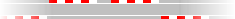

De: La Frikipedia, la enciclopedia extremadamente seria.
De: La Frikipedia, la enciclopedia extremadamente seria. De: La Frikipedia, la enciclopedia extremadamente seria.
| De la serie la IndyCar mola: | |||
| Ernesto José Viso  | |||
|
| |||
| Nacionalidad: | | ||
| Coche nº: | |||
| Compite en el equipo: | |||
| Nº de cacharrazos provocados: | No quieras saberlo... | ||
| Nº de coches aniquilados: | Más y más | ||
| Nº de muertes que se le atribuyen: | Tuvo un susto importante en la GP2 en Francia [1] | ||
| ¿Compite ahora mismo? | Ya no | ||
| Victorias en la categoría | Bueno, un podio... | ||
| Campeonatos ganados: | Eso sí que no | ||
«Viso es un loco venezolano, pero es buen chico»
~ Tony Kanaan sobre Viso
Ernesto José Viso, El demonio de Caracas y también conocido como "EJ Viso" por los yankees, es un piloto venezolano que compitió en la IndyCar.
Viso entró en la Ge Pedos allá por el 2005, con el equipo BCN Competición. Su incio fue patético decepcionante, pero en las últimas carreras se motivó y llegó tres veces al podio. Para 2006, Viso sobornó fichó por iSport International y allí mejoró sus resultados, consiguiendo dos victorias que le auparon al sexto puesto final. Probó el mierdoso Espaiker F1 en unos entrenamientos libres [2] e intentó fichar por Toro Rosso, pero la cagaron completamente las negociaciones no fructificaron y el venezolano se quedó sin volante para 2007. Luego pudo competir en tres carreras otra vez en la GP2, con poca suerte, lo que le impulsó a probar suerte al otro lado del charco.
EJ llegó a la IndyCar en 2008, de la mano del intento de equipo HVM Racing. En su segunda carrera le regalaron consiguió un cuarto lugar, al que siguieron seis carreras más acabando en el top ten tras contratar a un brujo. En 2009, Ernesto continuó en las filas de HVM, empezando como el culo pero mejorando posteriormente para volver a acabar 18º en la clasificación final pese a que su coche era una cafetera.
KV Racing llamó a su puerta en 2010 y Viso se fue para allá, a ver si tenía más suerte. Efectivamente, la llegada de Super Sato fue una bendición para él, ya que el japo mejoró el coche de la escudería con sus habilidades divinas y encima se hicieron amigos [3] [4] [5] [6] [7] [8]: En Iowa, Sato iba 3º, pero la lió decidió estrellarse contra el muro tras recibir una amenaza de dos collejas por parte de Viso para regalarle el primer podio a su colega EJ en la categoría, quien no lo dudó y aceptó encantado, llevándose la copa a casa. Sin mucho más que destacar (dos undécimos como mejor resultado sin contar el podio), ese tercer puesto y la presencia de Sato le convencieron para seguir.
En 2011, EJ sigue en las filas de KV Racing. Destacar que su amigo Takuma le consiguió el patrocinio de Lotus [9], pa que veas si son amigos [10] [11]. Si aún no te lo crees, pues mira la imagen de ahí al lado. No obstante, el año tampoco fue muy afortunado y volvió a acabar en 18º puesto en la clasificación general. Además, como en una de las últimas carreras, el japo se lo llevó por delante [12], parece ser que las cosas se torcieron bastante entre ellos: [13]. Insen-Sato cambió de equipo para el 2012, ya que el parecer se cagó no quiso enturbiar más las cosas con Viso. Ese año, EJ logró un 5º puesto como mejor resultado en una carrera y fue 20º en el campeonato.
El venezolano cambió de equipo tres años después: en 2013 corrió con un coche satélite de Andretti Autosport y HVM Racing. Obtuvo dos 4ª posiciones como mejor registro y el 15º lugar en la clasificación general.
En 2014 se queda sin volante en la IndyCar y pasa a competir en la Stadium Super Trucks (¿y qué es eso? Nadie lo sabe). Pero consigue reaparecer en las prácticas de las 500 millas de Indianápolis, sustituyendo a James Hinchcliffe gracias a un intento de asesinato accidente de este.
| | |||
|---|---|---|---|
|
Deportes
Deportistas
Competiciones
Otros
Artes Marciales
|
| | ||
| Geografía
Personalidades
Furbo
Otros
|
Autor(es):
![[3]](http://espndeportes-assets.espn.go.com/2003/photos2010/0322/viso1.jpg){kind=link}
![[4]](http://espndeportes-assets.espn.go.com/2003/photos2010/0510/e_takuma_sato_300x300.jpg){kind=link}
![[5]](http://diarioautomotriz.com/home/wp-content/uploads/2011/06/TAKUMA-SATO-Y-ERNESTO-VISO-CONFIADOS-EN-SOBRESALIR-EN-LA-NOCHE-DE-IOWA.jpg){kind=link}
![[6]](http://a8.sphotos.ak.fbcdn.net/hphotos-ak-ash3/29840_432015269953_3594854_n.jpg){kind=link}
![[7]](http://a1.sphotos.ak.fbcdn.net/hphotos-ak-ash3/30790_427592879953_6627264_n.jpg){kind=link}
![[11]](http://cdn-6.motorsport.com/static/img/mgl/1000000/1090000/1094000/1094000/1094036/s1_1.jpg){kind=link}
![[13]](http://img526.imageshack.us/img526/120/visosato.jpg){kind=link}
![[14]](http://www3.pictures.zimbio.com/gi/E+J+Viso+Indianapolis+500+Mile+Race+Qualifying+8POgt_kYb7Yl.jpg){kind=link}
![[19]](https://www.takumasato.com/images/Diary/Diary_M5SJjMa7NaG4JpF8iPktIGg8_3.png){kind=link}
![[20]](https://www.takumasato.com/images/Diary/Diary_h7G0VEpNFd5wfXzPtWzIV6P7_0.png){kind=link}
![[21]](http://web.archive.org/web/20120429003834/http://kvracingtechnology.homestead.com/2010/wallpaper_ej_podium.jpg){kind=link}
![[22]](http://www1.pictures.zimbio.com/gi/E+J+Viso+IZOD+IndyCar+Series+Party+Celebrate+istvIArGJ2Xl.jpg){kind=link}
![[23]](http://a6.sphotos.ak.fbcdn.net/hphotos-ak-ash3/29940_429267659953_7481071_n.jpg){kind=link}
![[27]](http://media2.whosaystatic.com/677000/677000_800wc.jpg){kind=link}